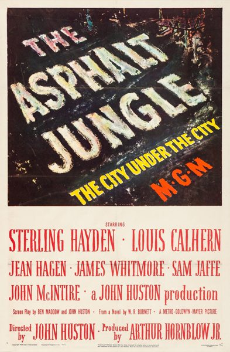

The Asphalt Jungle

Starring: Sterling Hayden, Louis Calhern, Jean Hagen
Director: John Huston
Writer: Ben Maddow, John Huston
Producer: Arthur Hornblow, Jr.
The Asphalt Jungle is a 1950 American heist film noir directed by John Huston, from a screenplay co-written with Ben Maddow. It stars Sterling Hayden, Louis Calhern, Jean Hagen, James Whitmore, Sam Jaffe, John McIntire and Marilyn Monroe in one of her earliest roles. Based on the 1949 novel by W. R. Burnett, it tells the story of a jewel robbery in a Midwestern city.
Trivia
- Selected for the National Board of Review: Top Ten Films.
- Also nominated for: Academy Award for Best Supporting Actor; Academy Award for Best Director; Academy Award for Best Cinematography, Black-and-White; Academy Award for Best Writing, Adapted Screenplay.
- Based on The Asphalt Jungle (book by W. R. Burnett).
- The film was an adaptation by director John Huston and screenwriter Ben Maddow of the 1949 novel by crime writer W. R. Burnett.
- From the publication of Burnett's first novel Little Caesar in 1929, he had written numerous books that were adapted into films shortly after publication.
- Huston and Maddow wrote the adaptation, which emphasized the crooks' story and reduced the police procedural aspect.
Filming Locations
- The opening sequence of Dix Handley evading police was filmed on-location in Cincinnati, with various local landmarks visible, such as the John A. Roebling Suspension Bridge, Carew Tower, and Fourth and Vine Tower.
- The final scene was shot at Keeneland in Lexington, Kentucky.
- The rest of the film was shot either in Los Angeles or at MGM's Culver City studios.
Previous Showings
3 Runs • 2 Festivals
1,672 tickets sold
All runs on record (3):
- July 21, 1994 · 534 ticketsw/ Cat on a Hot Tin Roof
- March 22 - 23, 2003 · 758 ticketsFilmNoirw/ Detour
- June 24 - 25, 2026 · 380 ticketsSummer 2026 including the Films of Marilyn Monroew/ Clash by Night